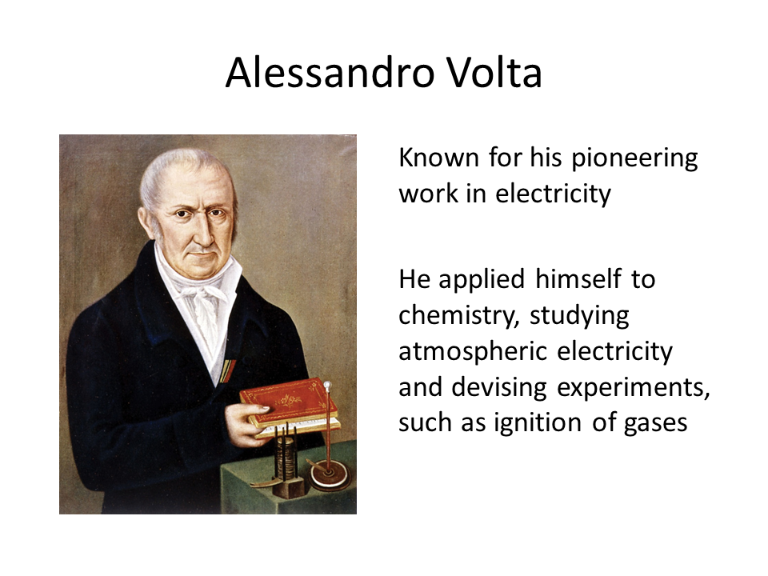
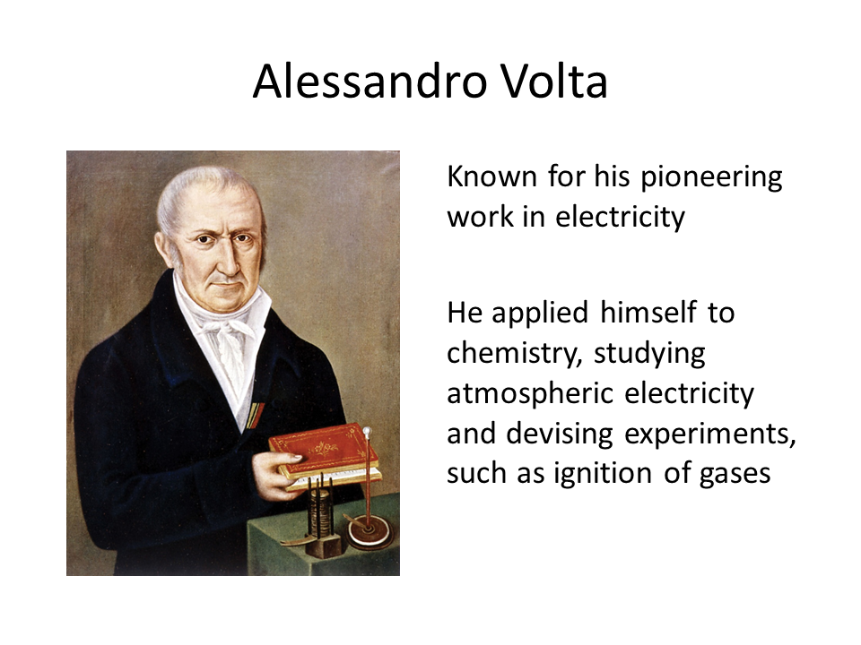

The Circulatory System
The Circulatory System
The Circulatory System is the transport system of the body. It is responsible for the distribution of blood throughout the body.
THE HEART
The pumping organ of the circulatory system. Located at the center of the chest slightly tilted to the left
-
Atria -- responsible for receiving used blood coming from all part of the body
-
Ventricle -- pumping chamber of the heart
-
Valves -- overlapping layers of tissue that allow blood to flow in only one direction
THE BLOOD
The liquid medium that is constantly flowing throughout the body
-
Red Blood cells -- small, spherical, enucleated and biconcave cells -- transport gases (oxygen and Carbon dioxide) respectively to and from the cells
-
White Blood Cells -- irregular in shape and are slightly larger than the red blood cells -- they fight bacteria, viruses, fungi and parasites that cause infection
-
Platelets -- smallest of the formed components of the blood -- help stop bleeding
-
Plasma -- Liquid part of the blood
THE BLOOD VESSELS
Vast network of tubes that carry blood throughout your body
- Arteries -- carry oxygen-rich blood away from the heart
Aorta -- largest artery
Arterioles -- smallest arteries
- Veins -- thin walled and loose blood vessels -- carry oxygen-poor blood back to the heart
Vena Cava -- largest vein
Venules -- smallest veins
- Capillaries -- smallest blood vessels -- oxygen, food nutrients and wastes pass through their walls
LYMPHATIC SYSTEM
It is an accessory system of the circulatory system.
-
Absorbs fats from the intestine to the blood streams.
-
Removes and destroys toxic substance
-
Prevents the spread of diseases throughout the body
The fluid, called lymph, passes through the lymph nodes before it is returned to the blood circulation
Lymph nodes are masses of tissues composed of many white blood cells
Notes:
The Sphygmomanometer is a device used to measure blood pressure, composed of an inflatable cuff to restrict blood flow and a mechanical manometer to measure the pressure.


 
